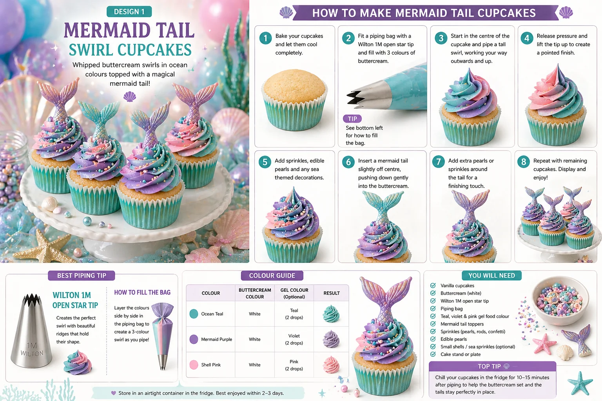
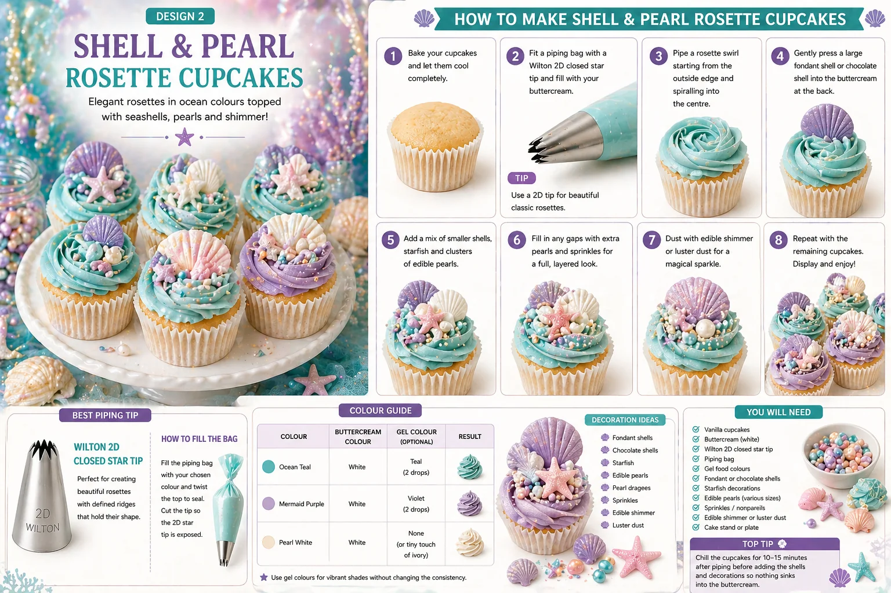

Mermaid cupcakes are perfect for colourful children’s parties, under-the-sea birthdays and pastel dessert tables. With soft ocean colours, edible pearls, shells and mermaid tail toppers, they can make a party table feel magical without needing complicated decorating skills.
At Little Moment Studio, our focus is balloon styling and celebration setups. We do not make cakes or cupcakes ourselves, but we know how important the dessert table is to the overall look of a party. These cupcake ideas are designed as inspiration for your celebration table, and we are happy to recommend a trusted local cake maker if you would like cupcakes or a cake to complement your balloon display.
This guide covers two easy mermaid cupcake designs:
- Mermaid Tail Swirl Cupcakes
- Shell & Pearl Rosette Cupcakes
Both designs are colourful, beginner-friendly and perfect for matching with pastel balloon garlands, ocean-themed backdrops and under-the-sea party styling.
Why These Two Designs Work
These two designs work beautifully together because they give your dessert table a mix of height, colour and delicate detail. The mermaid tail cupcakes create the main wow-factor, while the shell and pearl rosettes add a softer, more styled finish. Together, they work well with aqua, teal, lilac, pink, pearl and shimmer balloon displays.
| Design | Style | Difficulty | Best For |
|---|---|---|---|
| Mermaid tail swirl cupcake | Tall pastel swirl with tail topper | Easy | Colour and height |
| Shell & pearl rosette cupcake | Soft rosette with shells and pearls | Easy | Elegant ocean detail |
Mermaid Tail Swirl Cupcakes

The mermaid tail swirl cupcake is the most eye-catching design. It uses colourful buttercream piped into a tall swirl, then finished with a fondant or chocolate mermaid tail topper. This design looks impressive but is very achievable if you use a ready-made mermaid tail topper or silicone mould.
What You Will Need
| Item | Purpose |
|---|---|
| Vanilla cupcakes | A simple base for the colourful topping |
| White buttercream | Main buttercream for colouring |
| Piping bag | Holds the buttercream |
| Wilton 1M piping tip | Creates the tall swirl |
| Teal, violet and pink gel colours | Creates the mermaid colour blend |
| Mermaid tail topper | Main decoration |
| Sprinkles, pearls or confetti | Adds texture and sparkle |
| Small shells or sea sprinkles | Optional extra detail |
Best Piping Tip for Mermaid Tail Swirl Cupcakes
Use a Wilton 1M open star tip. This creates a tall swirl with defined ridges, giving the cupcake height and a strong base for the mermaid tail topper. The ridges also help the colours show nicely when using teal, purple and pink buttercream together.
How to Make Mermaid Tail Swirl Cupcakes
- Bake and cool the cupcakes. Let them cool completely before decorating. If the cupcakes are still warm, the buttercream will soften and the swirl will not hold its shape properly.
- Prepare the buttercream colours. Make a firm vanilla buttercream and divide it into three bowls. Colour each with gel food colouring: teal or aqua, mermaid purple, and shell pink. Gel colours are better than liquid because they create strong shades without making the buttercream too soft.
- Fill the piping bag. Fit a piping bag with a Wilton 1M open star tip. To create a multi-coloured swirl, lay three lines of buttercream side by side on cling film, roll into a log, twist the ends, then place the log inside the piping bag. This helps the colours come out together as you pipe.
- Pipe the swirl. Hold the piping bag upright over the cupcake. Start at the outside edge and pipe around the cupcake in a circle. Continue working inwards and upwards until you reach the centre. Finish with a small peak.
- Add sprinkles and pearls. Add edible pearls, shimmer sprinkles, pastel confetti or small sea-themed sprinkles while the buttercream is still soft.
- Add the mermaid tail topper. Insert the tail slightly off-centre into the buttercream swirl. Push it down gently so it sits securely. If the topper is heavy, chill the cupcake for 10–15 minutes first so the buttercream firms up enough to support it.
Colour Ideas for Mermaid Tail Swirl Cupcakes
| Theme | Buttercream | Decorations | Result |
|---|---|---|---|
| Classic Mermaid | Teal, purple and pink | Mermaid tail, pearls, pastel sprinkles | Bright mermaid party look |
| Aqua Lagoon | Aqua and pearl white | Teal tail, white pearls, shimmer | Fresh ocean style |
| Pink Mermaid | Pink, lilac and ivory | Pink tail, pearls, star sprinkles | Soft girly mermaid look |
| Purple Ocean | Violet, teal and white | Purple tail, silver pearls | Rich under-the-sea finish |
| Luxury Pearl | Ivory, champagne and aqua | Gold pearls, pearl sprinkles, pale tail | Softer premium look |
Shell & Pearl Rosette Cupcakes

Shell and pearl rosette cupcakes are softer and more elegant. They use a buttercream rosette topped with fondant shells, edible pearls, starfish and a light dusting of shimmer. This design is perfect for balancing the taller mermaid tail cupcakes and adds a more delicate, styled finish to the table.
What You Will Need
| Item | Purpose |
|---|---|
| Vanilla cupcakes | Cupcake base |
| White buttercream | Main rosette topping |
| Piping bag | Holds the buttercream |
| Wilton 2D piping tip | Creates the rosette |
| Gel food colours | Optional, for teal, purple or pearl tones |
| Fondant or chocolate shells | Main decoration |
| Starfish decorations | Optional extra detail |
| Edible pearls | Adds an ocean feel |
| Pearl dragées or nonpareils | Adds texture |
| Edible shimmer or lustre dust | Optional sparkle |
Best Piping Tip for Shell & Pearl Rosettes
Use a Wilton 2D closed star tip. This creates a soft rosette with defined ridges. The rosette is flatter than a tall swirl, which makes it ideal for holding shell decorations and edible pearls without them sliding off.
How to Make Shell & Pearl Rosette Cupcakes
- Bake and cool the cupcakes. Cool cupcakes help the buttercream stay firm and stable throughout decorating.
- Prepare the buttercream. Make a firm vanilla buttercream. Leave it pearl white or colour it with a small amount of teal, aqua or violet gel food colouring. For the prettiest table display, use a mix of ocean teal, mermaid purple and pearl white across the batch.
- Fill the piping bag. Fit a piping bag with a Wilton 2D closed star tip. For a two-tone effect, place one colour on one side of the bag and another on the other side.
- Pipe the rosette. Hold the piping bag upright over the centre of the cupcake. Start in the centre and pipe a small curl. Continue spiralling outwards towards the edge to create a flat rosette. Stop squeezing before lifting the bag away so the end looks neat.
- Add the shell decoration. Gently press a fondant shell, chocolate shell or ready-made shell topper into the buttercream, slightly towards the back or side so the rosette still shows.
- Add pearls and smaller details. Add edible pearls, small starfish, sea sprinkles or pearl dragées around the shell. Avoid overcrowding the cupcake — a few well-placed details look better than a busy finish.
- Add shimmer. Dust lightly with edible shimmer or lustre dust for an under-the-sea sparkle. Use a light touch — too much can make the design look messy.
- Let the cupcakes firm slightly. Leave for 10–15 minutes before boxing or serving to help the buttercream hold the shell decorations in place.
Colour Ideas for Shell & Pearl Rosette Cupcakes
| Theme | Buttercream | Decorations | Result |
|---|---|---|---|
| Ocean Teal | Teal | White shells, pearls, shimmer | Bright ocean look |
| Mermaid Purple | Violet | Purple shells, pearl dragées | Magical mermaid style |
| Pearl White | Ivory or white | White shells, pearls, edible shimmer | Elegant shell finish |
| Pastel Lagoon | Aqua and pale pink | Pink shells, sea pearls, starfish | Soft pastel party style |
| Luxury Mermaid | Champagne, teal and lilac | Gold pearls, shimmer, shell toppers | Premium dessert table look |
Key Difference Between the Two Designs
| Design | Main Technique | Finish |
|---|---|---|
| Mermaid tail swirl cupcake | Tall 1M buttercream swirl | Mermaid tail topper |
| Shell & pearl rosette cupcake | Flat 2D buttercream rosette | Shells, pearls and shimmer |
The mermaid tail cupcake adds height and drama. The shell and pearl rosette adds detail and elegance. Together, they create a more complete under-the-sea dessert table.
How to Style Mermaid Cupcakes on a Dessert Table
Mermaid cupcakes work best with a soft ocean-inspired palette. A strong mermaid palette could be: aqua, teal, lilac, blush pink, pearl white and soft gold.
Good styling details include:
- Aqua, lilac and blush pink balloon garlands
- Pearl or chrome finish balloons
- Shell and starfish decorations
- Clear jars of pearls or pastel sweets
- Iridescent or pearl table fabric
- White cake stands in different heights
- Pastel cupcake cases
This palette works especially well for children’s birthdays and under-the-sea party setups, and coordinates beautifully with a pastel balloon arch or garland behind the table.
Suggested Cupcake Box
Box of 12:
| Quantity | Design |
|---|---|
| 6 | Mermaid tail swirl cupcakes |
| 6 | Shell & pearl rosette cupcakes |
Box of 6:
| Quantity | Design |
|---|---|
| 3 | Mermaid tail swirl cupcakes |
| 3 | Shell & pearl rosette cupcakes |
Where to Get Mermaid Tail and Shell Toppers
For the easiest version, use ready-made edible mermaid tail and shell toppers. You can also use silicone moulds with fondant, modelling paste or chocolate.
Useful search terms include: mermaid tail fondant mould, mermaid tail cupcake toppers, shell fondant mould, seashell chocolate mould, edible mermaid cupcake toppers, under-the-sea cupcake decorations.
When choosing moulds or toppers, check the size carefully. Some moulds are designed for larger cakes and may be too big for cupcakes. UK suppliers to check include The Cake Decorating Company, Cake Stuff, Amazon UK and Etsy UK.
Beginner Tips for Better Results
- Keep buttercream firm. If the swirl or rosette loses shape, chill the buttercream briefly or add a little more icing sugar before continuing.
- Get the tail topper to stay upright. Let the buttercream firm slightly before inserting the tail, and choose lightweight fondant or wafer-style toppers rather than heavy resin ones.
- Keep colours separate. When using multiple buttercream colours, place them side by side in the piping bag rather than mixing them together — this keeps the swirl looking vibrant rather than muddy.
- Use decorations sparingly. A few pearls, shells and sprinkles look more considered than covering the whole cupcake.
- Support heavier shells. Use firm buttercream and chill the cupcakes briefly before adding heavier shell decorations so they sit securely.
- Make toppers ahead. Both mermaid tails and shell decorations can be made the day before and left to firm up — this makes them easier to handle and less likely to break.
Your Questions Answered
Can you make mermaid cupcakes the day before?
Yes. Store them in a covered cupcake box or airtight container in a cool, dry place. If using fondant tails or shell decorations, keep them away from humidity as fondant can become sticky. Toppers can be made ahead and left to firm up, which gives a better result.
How do you transport mermaid cupcakes safely?
Use a proper cupcake box with inserts. Shell and pearl rosettes are easier to transport because they are flatter. Mermaid tail cupcakes are taller — check the box has enough height clearance. If tails are delicate, add them after transport. Keep cupcakes away from heat and direct sunlight.
How do you make a multi-coloured mermaid buttercream swirl?
Lay three lines of differently coloured buttercream side by side on a sheet of cling film. Roll into a log, twist the ends, then place the log inside your piping bag. As you pipe, the colours come out together. Teal, purple and pink work particularly well for a mermaid design.
Useful Tools
- Wilton 1M open star piping tip
- Wilton 2D closed star piping tip
- Disposable piping bags
- Teal, violet and pink gel food colours
- Mermaid tail silicone mould or ready-made toppers
- Shell silicone mould or ready-made shell decorations
- Edible pearls and pearl dragées
- Sea-themed sprinkles
- Edible shimmer or lustre dust
- Pastel cupcake cases
- Cupcake boxes with inserts
The two designs work well as a pair because they contrast in height and finish — the tall mermaid tail swirls create drama and colour, while the flat shell rosettes bring a more delicate, ocean-inspired detail. Together they make a dessert table that feels magical and coordinated without requiring professional decorating skills.
To see how these cupcakes can work alongside a balloon display, read our guide on how to match cupcakes with your balloon display.
For more birthday cupcake inspiration, see our guide to birthday cupcake ideas and our article on fondant cupcake ideas for celebrations.
Planning a Mermaid Party in Kent?
Little Moment Studio creates coordinated balloon displays, garlands and backdrops for children’s birthdays and under-the-sea parties across Sittingbourne and Kent. We can also recommend a trusted local cake maker to complete the table.